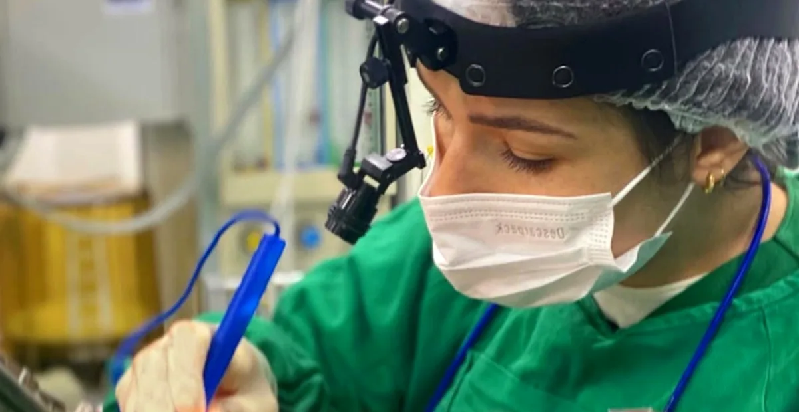
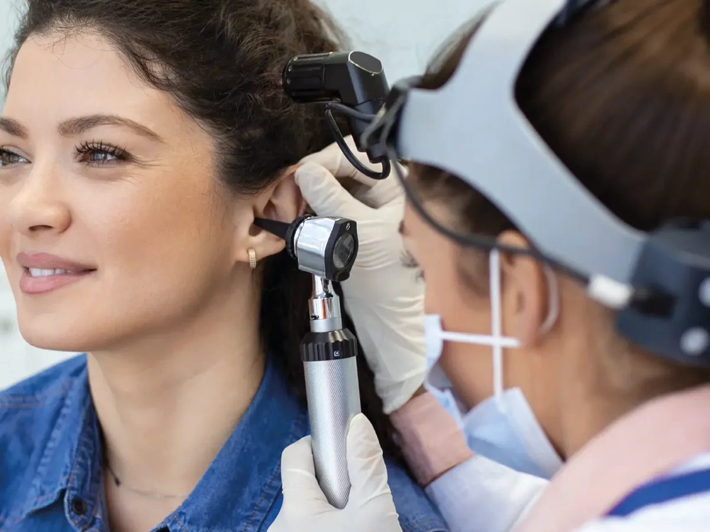

Crianças
Ronco, respiração pela boca, otites e alergias, com uma avaliação que respeita o tempo de cada criança.
Otorrinolaringologista e alergologista em Juiz de Fora
Otorrinolaringologista titulada pela ABORL‑CCF, com especialização pela PUC-Rio e formação em Foniatria. Atende crianças, adultos e idosos.
CRM-MG 109116 | RQE 68427
PUC-Rio
Especialização em Otorrinolaringologia
ABORL-CCF
Título de especialista
Foniatria
Formação complementar em voz e fala
+0 anos
De atuação na Medicina
Ouvir com calma, examinar com cuidado e explicar com clareza, para que cada paciente, da criança ao idoso, volte a respirar, ouvir e dormir bem.
Sou médica otorrinolaringologista e alergologista, e acredito que todo bom tratamento começa com uma boa escuta.
Me formei em Medicina pela Universidade Estácio de Sá e fiz a especialização em Otorrinolaringologia pela PUC-Rio, em parceria com a Clínica Septo. Tenho título de especialista pela ABORL‑CCF e formação complementar em Foniatria, que me permite avaliar também a voz e a fala, de crianças com atraso na fala a adultos com rouquidão.
Na consulta, ouço sua história com calma antes de pedir qualquer exame ou indicar uma cirurgia. Explico o que encontrei de forma clara, para que você saia sabendo o que está acontecendo e qual é o próximo passo.
Ronco, respiração pela boca, otites e alergias, com uma avaliação que respeita o tempo de cada criança.
Sinusite, rinite, rouquidão, tontura e apneia, com exame e orientação no próprio consultório.
Perda auditiva e zumbido, com audiometria para acompanhar a audição de perto.

Para infecções de garganta repetidas, ronco e apneia, em crianças e adultos.
Saiba maisDescobre o que desencadeia rinite, asma e crises alérgicas, para tratar a causa.
Saiba mais
Avaliação da audição, da criança ao idoso, com acompanhamento de perto.
Saiba maisEsses sinais atrapalham o sono e, com ele, a escola e o humor da criança. Na consulta, a Dra. Alice examina, explica o que encontrou e diz quando vale tratar e quando vale só acompanhar.
★★★★★Atendimento atencioso do início ao fim, com explicações claras e sem pressa.
★★★★★Consulta pontual e bem conduzida. Saí com os próximos passos definidos.
★★★★★Ambiente tranquilo e avaliação cuidadosa. Dá segurança em cada etapa.
A Dra. Alice atende crianças, adultos e idosos. Para confirmar a partir de que idade o atendimento é indicado no caso do seu filho, fale com a clínica pelo WhatsApp.
Sim. Unimed, Sabin Sinai, Plasc, Casembrapa, Fundaffemg e Amil. Confirme a cobertura do seu plano pelo WhatsApp antes da consulta.
Pequenas gotas com os alérgenos mais comuns são aplicadas na pele do braço, e a leitura é feita em poucos minutos, no próprio consultório. A Dra. Alice explica antes se é preciso suspender algum remédio.
Costuma levar de uma a duas semanas, com alimentação mais fria e pastosa nos primeiros dias. Todas as orientações são passadas por escrito e acompanhadas no retorno.
Para consulta particular, não. Alguns convênios podem pedir guia ou encaminhamento: a clínica confirma isso com você no agendamento.
Atendimento em Juiz de Fora, no bairro Passos. Mande uma mensagem pelo WhatsApp para ver os horários e confirmar o seu convênio.
Agendar consulta